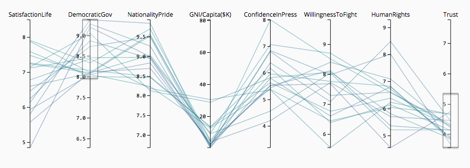
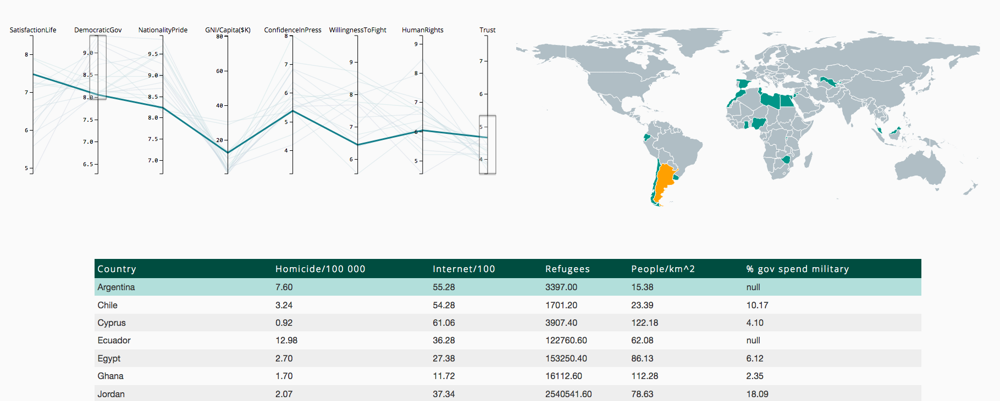
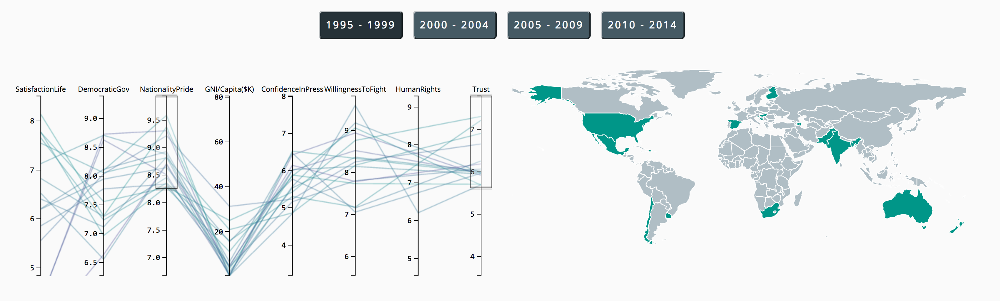
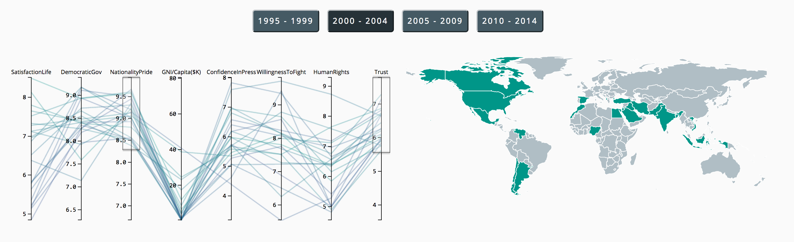
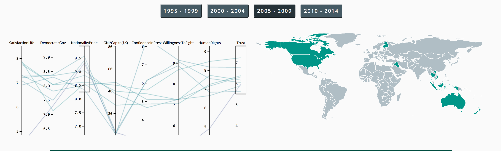
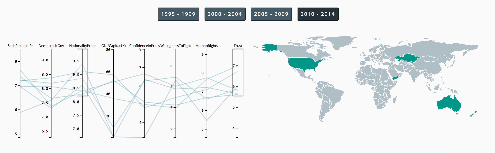
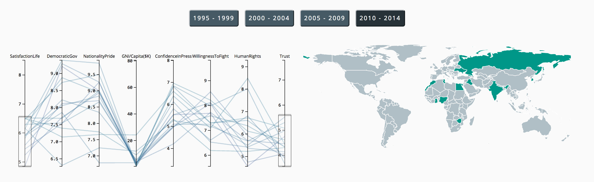
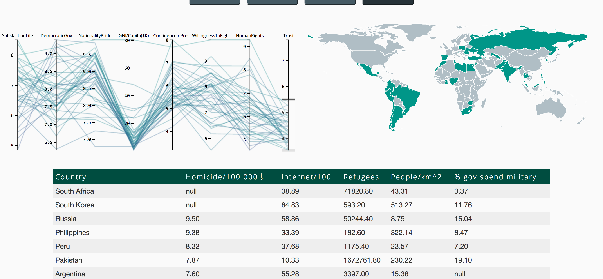

In my visualization you can brush the different variables to see if perhaps there's a correlation between general trust in people and a perceived democratic government.

The brushed data gathers in a list below the parallel coordinates where sortable data is available for further correlations.

For example I look at how the general trust in people has changed over the years, in correlation with being proud of your nationality. Which gives me the following




which indicates that the trust has gone down. Further more, if I look at the correlation between trust and satisfaction with life, the ones with the lowest satisfaction in life also have the least trust in people.This goes true over the years more or less.

Another thing I noticed was the correlation between the ones with the least trust and the countries with the highest homicide rates.

It's difficult to get to a one perfect conclusion, as the question might have been a bit too open. However, as described above, one could find some interesting correlations regarding the different variables. And with the addition of the Gapminder data (mainly the grid at the bottom), one can take the correlations even further.